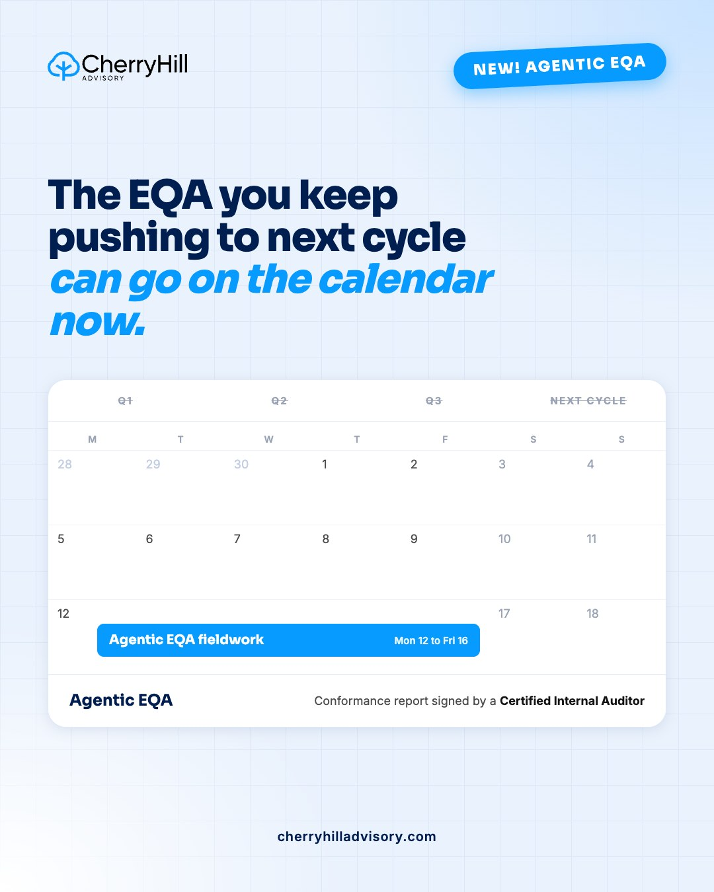
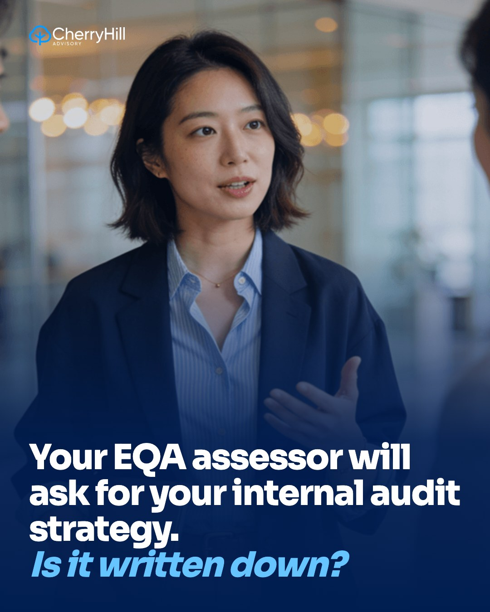
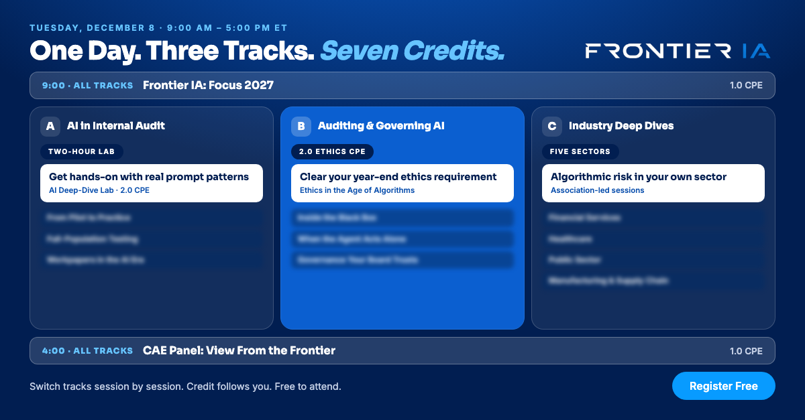
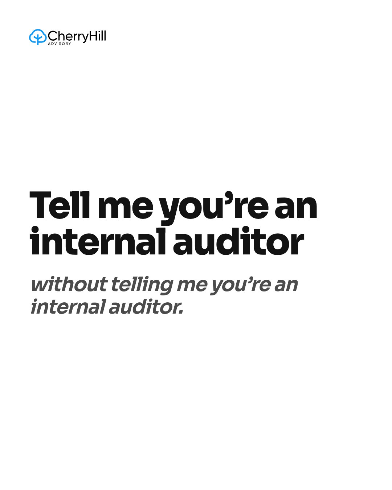
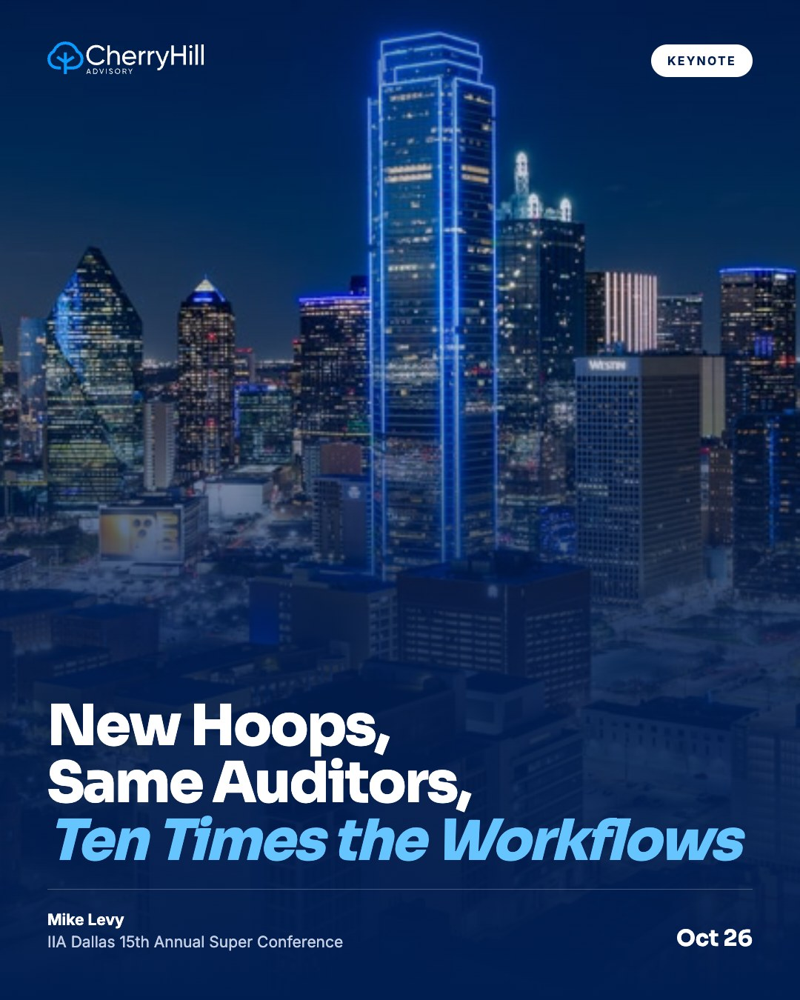
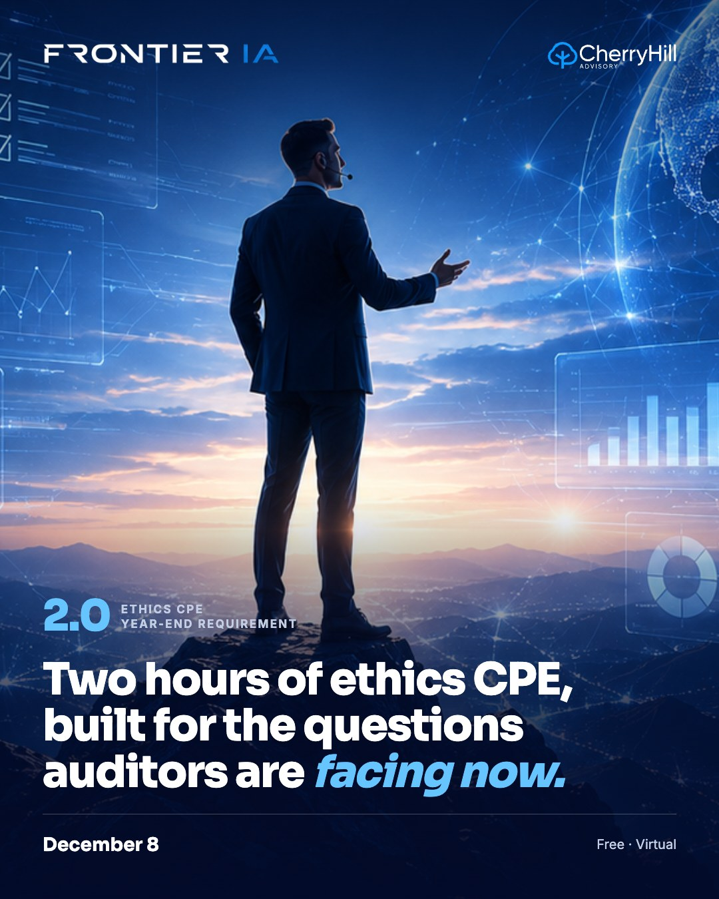
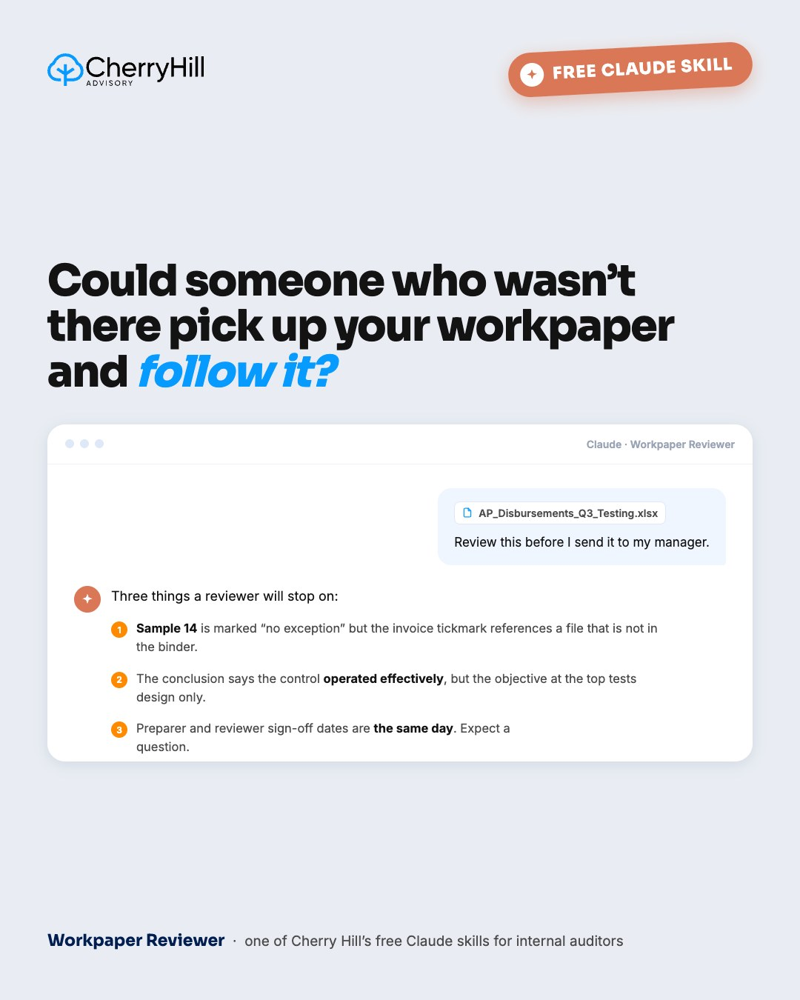
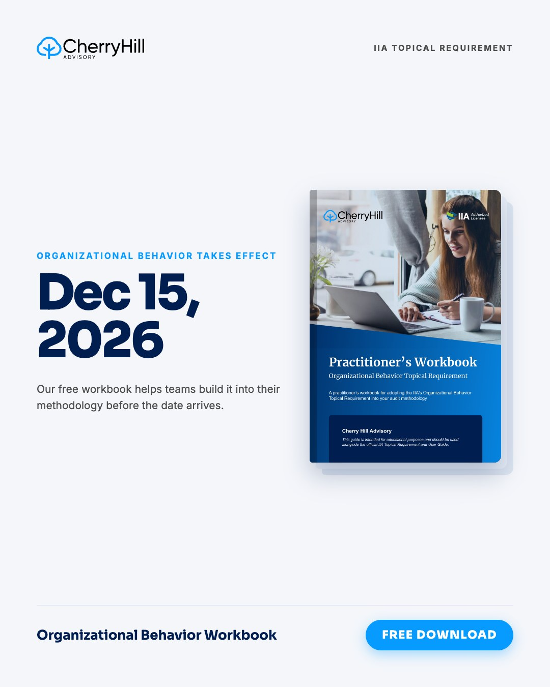
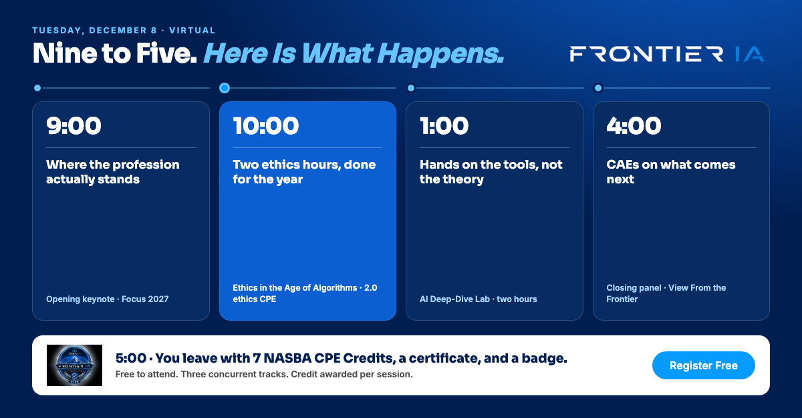
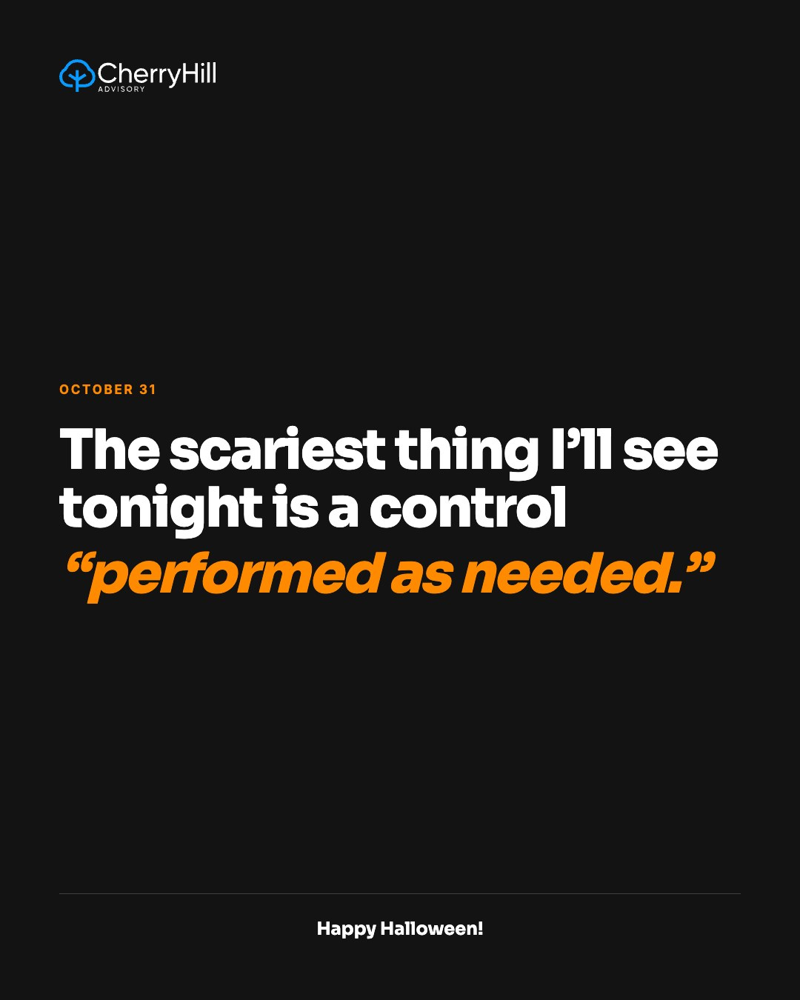

1Wed Oct 7 · Cherry Hill LinkedIn · Agentic EQA
CH
Cherry Hill Advisory
Internal audit and risk advisory
Oct 7 · 🌐
A lot of internal audit functions keep pushing their external quality assessment to the next cycle, and the reason we hear most often is the hours it takes.
The Agentic EQA is how we take that off the table. An agentic assessment team works through the full IIA Quality Assessment Manual, and a Certified Internal Auditor who meets the IIA independence and competency requirements reviews and signs the conformance report. The administrative hours come out of the fee, so the assessment you have been deferring becomes one you can put on the calendar.
It now sits at the top of our AI-Enabled Services page, and you can see how it works here:
https://www.cherryhilladvisory.com/ai-enabled-internal-audit-services#InternalAudit #QualityAssessment #EQA #CherryHillAdvisory
👍 Like💬 Comment🔁 Repost➤ Send
2Thu Oct 8 · Mike's LinkedIn · Frontier IA is back: Mike's intro
Mike's first Frontier post, so his followers hear about it from him before the sneak peeks. Planned as a video; it can go out as text today if he can't film.
ML
Mike Levy
CEO & Managing Principal, Cherry Hill Advisory
Oct 8 · 🌐
𝗙𝗿𝗼𝗻𝘁𝗶𝗲𝗿 𝗜𝗔 𝗶𝘀 𝗯𝗮𝗰𝗸 𝗼𝗻 𝗗𝗲𝗰𝗲𝗺𝗯𝗲𝗿 𝟴, 𝗮𝗻𝗱 𝗶𝘁'𝘀 𝗮 𝗳𝘂𝗹𝗹 𝗱𝗮𝘆 𝘁𝗵𝗶𝘀 𝘁𝗶𝗺𝗲.
Every time I ask a room of auditors who is using AI, nearly every hand goes up. Twelve months ago it was maybe half. The tools moved faster than the training did, and that gap is the whole reason we're doing this again.
→ Three tracks: AI inside the audit function, auditing and governing AI, and your own sector
→ A two-hour lab where you work hands-on with the tools
→ Sector sessions built with the partner associations
It's free and virtual, with 7 NASBA CPE credits, two of them ethics. You can register here:
https://www.cherryhilladvisory.com/frontier2026#InternalAudit #AIGovernance #FrontierIA #CherryHillAdvisoryVideo: Mike to camera (or text only today)
👍 Like💬 Comment🔁 Repost➤ Send
3Thu Oct 8 · Cherry Hill LinkedIn · Auditober Audit Engineering CPE: live today
Alex writes this one. Today's post.
CH
Cherry Hill Advisory
Internal audit and risk advisory
Oct 8 · 🌐
[ALEX: caption for the Auditober Audit Engineering CPE and hackathon kickoff, live today]
Graphic to come
👍 Like💬 Comment🔁 Repost➤ Send
4Fri Oct 9 · Mike's LinkedIn · A rubber stamp with a login
Rewritten in Mike's voice. I dropped the unsourced "99.8% in under four seconds" stat. No graphic in the files.
ML
Mike Levy
CEO & Managing Principal, Cherry Hill Advisory
Oct 9 · 🌐
Here's a question I'd ask any team that tells me a person reviews every AI output: how often does that person say no?
If the answer is almost never, and each approval takes a few seconds, what you have is a rubber stamp with a login. Someone is technically in the loop, but nobody could show you what they actually checked.
Review you can defend leaves a trail. Some outputs get rejected, there's a sampling approach, and there's a way to escalate the ones that look wrong. So if a regulator asked you to prove your review is substantive, what would you put in front of them?
That's one of ten gaps we wrote up from our time with senior audit and risk leaders at organizations scaling AI, and each one comes with the question we'd put to the team. You can read all ten here:
https://www.cherryhilladvisory.com/risk-register-blog/ai-governance-is-the-job-ten-things-to-get-right-as-adoption-scales#InternalAudit #AIGovernance #RiskManagementNo graphic yet
👍 Like💬 Comment🔁 Repost➤ Send
5Fri Oct 9 · Cherry Hill LinkedIn · AI Series Part 2 promo, Oct 13
Alex writes this one.
CH
Cherry Hill Advisory
Internal audit and risk advisory
Oct 9 · 🌐
[ALEX: promo caption for AI Series Part 2: The Rise of Agentic Audits, Tuesday Oct 13]
Graphic to come
👍 Like💬 Comment🔁 Repost➤ Send
6Mon Oct 12 · Cherry Hill LinkedIn · EQA strategy blog + Risk Register invite
CH
Cherry Hill Advisory
Internal audit and risk advisory
Oct 12 · 🌐
When an assessor reaches Domain IV of your external quality assessment, one of the first documents they ask for is your internal audit strategy.
Standard 9.2 expects the chief audit executive to develop and implement one, with a vision, strategic objectives and supporting initiatives, and to review it with the board and senior management. A risk-based audit plan does not cover it. Many functions have never written this document down, and it shapes how the rest of the assessment reads.
We walk through what the assessor will ask for, and how your audit plan should connect to the strategy, in our EQA preparation guide:
https://www.cherryhilladvisory.com/risk-register-blog/how-to-ace-your-external-quality-assessment-2026-2027If you'd like pieces like this in your inbox, The Risk Register is our free newsletter for internal audit and risk leaders. You can subscribe here:
https://www.cherryhilladvisory.com/risk-register-blog#InternalAudit #EQA #IIAStandards #CherryHillAdvisory
👍 Like💬 Comment🔁 Repost➤ Send
7Tue Oct 13 · Mike's LinkedIn · Ask a board who owns AI risk
No graphic in the files.
ML
Mike Levy
CEO & Managing Principal, Cherry Hill Advisory
Oct 13 · 🌐
Ask a board who owns AI risk at their organization.
The pause that follows is usually the most honest answer you get.
That's rarely negligence. AI usually spreads through a business a lot faster than anyone gets formally put in charge of it. By the time someone asks the ownership question out loud, it's in the hiring stack, the close process, and three tools nobody bought for their AI features in the first place.
The good news is you don't have to become a technologist to govern this. You need to know who's answerable to you, whether management can actually see where AI is being used, and whether anyone independent has confirmed the safeguards are real.
We wrote up the questions we'd ask if we were sitting in your seat. There are six areas, and for each one we cover what a reassuring answer sounds like and what should give you pause. You can read them here:
https://www.cherryhilladvisory.com/risk-register-blog/ai-governance-questions-every-board-should-ask-management#InternalAudit #AuditCommittee #AIGovernance #CherryHillAdvisoryNo graphic yet
👍 Like💬 Comment🔁 Repost➤ Send
8Wed Oct 14 · Cherry Hill LinkedIn · AI Series Part 2 recap
Graphic waits for Alex's survey number (after Oct 13).
CH
Cherry Hill Advisory
Internal audit and risk advisory
Oct 14 · 🌐
Thank you to everyone who joined AI Series Part 2: The Rise of Agentic Audits yesterday. [ALEX: registrations and attendance numbers]
During the session we asked the audience [ALEX: survey question], and [ALEX: result, as a %].
[ALEX: one sentence on what that number says about where audit teams are with agentic AI.]
Thank you to [ALEX: speakers and panelists to tag] for the conversation. If you missed it, you can watch the replay here:
[ALEX: replay link]
Part 3, Agentic AI Assessments, is on November 18 with free NASBA CPE.
#InternalAudit #AgenticAI #CherryHillAdvisory
Graphic to come
👍 Like💬 Comment🔁 Repost➤ Send
9Wed Oct 14 · Mike's LinkedIn · Repost of the Cherry Hill recap
Repost, no graphic.
ML
Mike Levy
CEO & Managing Principal, Cherry Hill Advisory
Oct 14 · 🌐
We ran this survey because I wanted to see where people actually are with agentic audit, as opposed to where the vendor decks say they are.
[MIKE: one line on what you made of the result]
Thank you to everyone who stayed for the Q&A. Your questions were better than my slides, and Part 3 on November 18 picks up where we left off.
👍 Like💬 Comment🔁 Repost➤ Send
10Thu Oct 15 · Mike's LinkedIn · Frontier sneak peek: Ethics in the Age of Algorithms
Video post. Mike films it. Moved from Oct 8 so the Frontier intro goes first. I removed the "best ethics course in 20 years" attendee line because the sheet flags it as sounding fake.
ML
Mike Levy
CEO & Managing Principal, Cherry Hill Advisory
Oct 15 · 🌐
𝗪𝗼𝘂𝗹𝗱 𝘆𝗼𝘂 𝗮𝗰𝗰𝗲𝗽𝘁 𝘁𝗵𝗶𝘀 𝗰𝗼𝗻𝗰𝗹𝘂𝘀𝗶𝗼𝗻 𝗶𝗳 𝗮 𝗺𝗮𝗻𝗮𝗴𝗲𝗿 𝗴𝗮𝘃𝗲 𝗶𝘁 𝘁𝗼 𝘆𝗼𝘂? 𝗜𝗳 𝗻𝗼𝘁, 𝗱𝗼𝗻'𝘁 𝗮𝗰𝗰𝗲𝗽𝘁 𝗶𝘁 𝗳𝗿𝗼𝗺 𝘁𝗵𝗲 𝗮𝗹𝗴𝗼𝗿𝗶𝘁𝗵𝗺.
Ethics in the Age of Algorithms starts from the idea that objectivity still applies when the output came from a model.
→ Accountability for automated decisions
→ Bias and transparency, in the terms an auditor actually uses
→ Where professional judgment still has to sit
It's two hours, and it carries your year-end ethics CPE. It's part of Frontier IA on December 8, and it's free.
https://www.cherryhilladvisory.com/frontier2026#InternalAudit #Ethics #AIGovernance #FrontierIA #CherryHillAdvisoryVideo: Mike to camera
👍 Like💬 Comment🔁 Repost➤ Send
11Thu Oct 15 · Cherry Hill LinkedIn · Frontier: the whole day, visible
Headline rewritten to drop the "One day. Three tracks. Seven credits." triplet.
CH
Cherry Hill Advisory
Internal audit and risk advisory
Oct 15 · 🌐
𝗛𝗲𝗿𝗲 𝗶𝘀 𝘁𝗵𝗲 𝘄𝗵𝗼𝗹𝗲 𝗙𝗿𝗼𝗻𝘁𝗶𝗲𝗿 𝗜𝗔 𝗮𝗴𝗲𝗻𝗱𝗮, 𝘀𝗼 𝘆𝗼𝘂 𝗰𝗮𝗻 𝗷𝘂𝗱𝗴𝗲 𝘁𝗵𝗲 𝗱𝗮𝘆 𝗯𝗲𝗳𝗼𝗿𝗲 𝘆𝗼𝘂 𝗿𝗲𝗴𝗶𝘀𝘁𝗲𝗿.
It's one day with three concurrent tracks and 7 NASBA CPE credits.
→ Track A, AI in the audit function: full-population testing, workpapers in the AI era
→ Track B, auditing and governing AI: model risk and explainability, agentic AI
→ Track C, sector sessions with partner associations: financial services, healthcare, public sector, manufacturing, technology
The day includes a two-hour hands-on lab and a two-hour ethics block. You can move between tracks session by session, and the credit follows you.
Tuesday, December 8, 9:00 AM to 5:00 PM ET. It's free, and you can register here:
https://www.cherryhilladvisory.com/frontier2026#InternalAudit #FrontierIA #CPE #CherryHillAdvisory
👍 Like💬 Comment🔁 Repost➤ Send
12Fri Oct 16 · Mike's LinkedIn · Fun Friday
ML
Mike Levy
CEO & Managing Principal, Cherry Hill Advisory
Oct 16 · 🌐
Tell me you're an internal auditor without telling me you're an internal auditor.
I'll go first. I have asked a restaurant for the itemized receipt so I could check the math.
Your turn in the comments. It's Friday, so the worse the better.

👍 Like💬 Comment🔁 Repost➤ Send
13Tue Oct 20 · Mike's LinkedIn · IIA Dallas pre-event
Brief asked for Mike's photo on this card. It's a skyline only.
ML
Mike Levy
CEO & Managing Principal, Cherry Hill Advisory
Oct 20 · 🌐
I called my Dallas session New Hoops, Same Auditors, Ten Times the Workflows, and I've been told it isn't a very reassuring title. I think it's an accurate one.
The workflows have multiplied, and most teams didn't get more people to go with them. Only about 25% of audit teams actively use AI in their own work, which means a lot of us are being asked to give assurance over tools we have never opened.
On October 26 at the IIA Dallas 15th Annual Super Conference I'll go through where the profession is on agentic AI and what the next three years are going to ask of us. Then I want to hear what you're all seeing.
Thank you to IIA Dallas, to chapter president Jenny Qin, CIA, and to the volunteers who put this conference on every year. Fifteen years of it is a real accomplishment. I'm also looking forward to hearing my fellow keynote speakers Kevin Daley, Dale Jeanes and Corey Cadderton.
#IIADallas #InternalAudit #AgenticAI #IIA

👍 Like💬 Comment🔁 Repost➤ Send
14Tue Oct 20 · Cherry Hill LinkedIn · Frontier ethics block
This image reads as AI-generated (suit, holograms). Alex asked for no AI visuals on Frontier posts because LinkedIn flags them. It's also all dark blue again. Needs a new image.
CH
Cherry Hill Advisory
Internal audit and risk advisory
Oct 20 · 🌐
Most of us need two hours of ethics CPE before the year closes, and a lot of us end up taking whichever course still has an open seat in late December.
Frontier IA has a better option. Ethics in the Age of Algorithms, 2026 Edition, is a two-hour block on December 8 carrying 2.0 ethics CPE, and it deals with the questions auditors are running into now, like what professional skepticism looks like when part of the evidence came from an AI tool.
Frontier is free and virtual, with 7 NASBA CPE credits across the day, including the 2 ethics hours. You can register here:
https://www.cherryhilladvisory.com/frontier2026#FrontierIA #InternalAudit #EthicsCPE #CherryHillAdvisory
👍 Like💬 Comment🔁 Repost➤ Send
15Wed Oct 21 · Cherry Hill LinkedIn · AI Series replay quote
Graphic waits for Alex's quote from the recording.
CH
Cherry Hill Advisory
Internal audit and risk advisory
Oct 21 · 🌐
"[ALEX: one sentence quoted exactly from the AI Series Part 2 recording]"
That was [SPEAKER NAME] during AI Series Part 2: The Rise of Agentic Audits.
If you missed the session, the full replay is here:
[ALEX: replay link]
Thank you to Diligent for partnering with us on the series. Part 3, Agentic AI Assessments, is on November 18.
#InternalAudit #AgenticAI #Diligent #CherryHillAdvisory
Graphic to come
👍 Like💬 Comment🔁 Repost➤ Send
16Wed Oct 21 · Mike's LinkedIn · Workpaper Reviewer skill
ML
Mike Levy
CEO & Managing Principal, Cherry Hill Advisory
Oct 21 · 🌐
Early in my career someone told me that if a person who wasn't involved in my work couldn't pick it up and understand exactly what I did, I hadn't documented it properly. I still think about that every time I look at a workpaper.
It's one of the reasons we built a Workpaper Reviewer into our free set of Claude skills for internal audit. It runs the reviewer pass before your manager does, checking tie-out, sufficiency, whether the conclusion is supported, and whether someone else could repeat the work.
A good senior reviewer still matters, and this means fewer workpapers come back with notes you could have caught yourself. All ten skills are free, and you can get them here:
https://www.cherryhilladvisory.com/10-claude-skills-for-internal-audit#InternalAudit #AIinAudit #ClaudeSkills
👍 Like💬 Comment🔁 Repost➤ Send
17Thu Oct 22 · Mike's LinkedIn · Frontier sneak peek: AI Deep-Dive Lab
Video post, a screen recording Mike makes. Moved to Oct 22.
ML
Mike Levy
CEO & Managing Principal, Cherry Hill Advisory
Oct 22 · 🌐
𝗧𝗵𝗲 𝗽𝗿𝗼𝗺𝗽𝘁 𝗶𝘀 𝘁𝗵𝗲 𝗲𝗮𝘀𝘆 𝗽𝗮𝗿𝘁.
Here's one pattern from the Frontier IA Deep-Dive Lab, applied to a real audit task. It takes about a minute. The hard part is what goes in the file afterwards.
→ What was asked
→ What came back
→ Who reviewed it and decided it could be relied on
If AI helped produce the conclusion, the workpaper has to show all three, or someone who wasn't involved can't pick it up and understand what you did. Most of the two hours goes on getting that right.
The lab runs December 8 inside Frontier IA. It's free, with 2.0 CPE for the lab alone.
https://www.cherryhilladvisory.com/frontier2026#InternalAudit #AI #FrontierIA #CherryHillAdvisoryVideo: Mike's screen recording
👍 Like💬 Comment🔁 Repost➤ Send
18Fri Oct 23 · Mike's LinkedIn · RSKA Forum post-event
Graphic waits for Alex to confirm the session title.
ML
Mike Levy
CEO & Managing Principal, Cherry Hill Advisory
Oct 23 · 🌐
Yesterday I spoke at Seattle University's RSKA Forum, Internal Audit in the AI Era: From Evidence to Influence. My session was on accountability across teams, systems and technologies, and the point I kept coming back to is one our profession has learned before with culture risk.
You can't cover culture with one annual review and call it done, because it has to be part of how every engagement gets scoped. AI is heading the same way. The functions handling it well are asking AI questions inside the audits they already run.
Thank you to the Albers School of Business and Economics at Seattle University and to IIA Seattle for hosting, and to chapter president Caroline Pietrowski, CIA. It was a pleasure to share the program with Bonnie Tse, Rachel Nelson and Roger Shiltz.
#RSKAForum #IIASeattle #InternalAudit #AIGovernance
Graphic to come
👍 Like💬 Comment🔁 Repost➤ Send
19Fri Oct 23 · Cherry Hill LinkedIn · Organizational Behavior workbook
CH
Cherry Hill Advisory
Internal audit and risk advisory
Oct 23 · 🌐

👍 Like💬 Comment🔁 Repost➤ Send
20Mon Oct 26 · Mike's LinkedIn · Wolters Kluwer post-event
Graphic waits for the post-event report (Oct 23).
ML
Mike Levy
CEO & Managing Principal, Cherry Hill Advisory
Oct 26 · 🌐
Thank you to Wolters Kluwer and the TeamMate team for having me on Auditing Vendor and Third-Party AI: Monitoring AI Tools You Do Not Own last week. [ALEX: attendance number from the post-event report]
[ALEX/MIKE: one line on the question from attendees that came up most, from the report]
If you missed it, the recording is here:
[REPLAY LINK]
#InternalAudit #AIGovernance #TeamMate #WoltersKluwer
Graphic to come
👍 Like💬 Comment🔁 Repost➤ Send
21Mon Oct 26 · Cherry Hill LinkedIn · IIA Dallas Super Conference: day-of
No graphic in the files. An event photo would suit it.
CH
Cherry Hill Advisory
Internal audit and risk advisory
Oct 26 · 🌐
Mike Levy is at the IIA Dallas 15th Annual Super Conference today, with a session called New Hoops, Same Auditors, Ten Times the Workflows.
Here's the short version of his argument. The profession is being asked to give assurance over tools most of it has never used, with the team it had last year, against governance written for a version of the technology that no longer exists.
The session is about what the next three years actually demand.
He's at the Renaissance Dallas Addison, 8:00 AM to 5:00 PM Central. Say hello if you're in the room.
#IIADallas #InternalAudit #AgenticAI #IIA #CherryHillAdvisory
Photo to come
👍 Like💬 Comment🔁 Repost➤ Send
22Tue Oct 27 · Mike's LinkedIn · IIA Dallas day after
Graphic waits for the Oct 26 event photos.
ML
Mike Levy
CEO & Managing Principal, Cherry Hill Advisory
Oct 27 · 🌐
Thank you, IIA Dallas. Yesterday at the 15th Annual Super Conference I got to walk through New Hoops, Same Auditors, Ten Times the Workflows with a room full of people doing this work every day.
[MIKE: one line on a question or conversation from the day that stayed with you]
Thank you to Jenny Qin, CIA, and the IIA Dallas volunteers. Putting on a conference for fifteen years takes a lot of people giving up a lot of evenings. It was a pleasure sharing the keynote stage with Kevin Daley, Dale Jeanes and Corey Cadderton.
#IIADallas #InternalAudit #AgenticAI #IIA
Graphic to come
👍 Like💬 Comment🔁 Repost➤ Send
23Tue Oct 27 · Cherry Hill LinkedIn · Frontier: Nine to five, here is what happens
CH
Cherry Hill Advisory
Internal audit and risk advisory
Oct 27 · 🌐
𝗪𝗵𝗮𝘁 𝗗𝗲𝗰𝗲𝗺𝗯𝗲𝗿 𝟴 𝗮𝗰𝘁𝘂𝗮𝗹𝗹𝘆 𝗹𝗼𝗼𝗸𝘀 𝗹𝗶𝗸𝗲, 𝗵𝗼𝘂𝗿 𝗯𝘆 𝗵𝗼𝘂𝗿.
→ 9:00, opening keynote: where the profession stands on AI and what 2027 asks of it
→ 10:00, Ethics in the Age of Algorithms: two hours, closes out your year-end ethics requirement
→ 1:00, AI Deep-Dive Lab: two hours, hands on the tools
→ 4:00, closing panel: an hour with chief audit executives
→ 5:00, seven credits, a certificate and a badge
It's free and virtual, and you can move between tracks session by session. You can register here:
https://www.cherryhilladvisory.com/frontier2026#InternalAudit #FrontierIA #CPE #CherryHillAdvisory
👍 Like💬 Comment🔁 Repost➤ Send
24Wed Oct 28 · Mike's LinkedIn · The second audit committee meeting is the hard one
No graphic in the files. It names Central Virginia on Oct 29, and the sheet says to move the Central Virginia posts to November, so confirm that line still stands.
ML
Mike Levy
CEO & Managing Principal, Cherry Hill Advisory
Oct 28 · 🌐
Two years ago the audit committee asked whether we were using AI.
This year they're asking what it touched, who looked at the output before anyone acted on it, and whether we can show them the trail.
That second meeting is a much harder meeting.
The functions handling it well did one unglamorous thing early. They got a seat on the AI governance committee before the vendor was chosen. They weren't there to approve anything. They wanted to be in the room while the decisions were still cheap to change.
On October 29 I'm at the IIA Central Virginia conference with the Walktru team, talking about where the function needs to point itself now that the board has caught up.
If you've already had the second meeting, I'd like to hear how it went.
#InternalAudit #AuditCommittee #AIGovernance #CherryHillAdvisory
No graphic yet
👍 Like💬 Comment🔁 Repost➤ Send
25Thu Oct 29 · Mike's LinkedIn · Frontier: Send the whole function
Video post, filmed in Dallas.
ML
Mike Levy
CEO & Managing Principal, Cherry Hill Advisory
Oct 29 · 🌐
𝗧𝗵𝗲 𝗯𝘂𝗱𝗴𝗲𝘁 𝗰𝗼𝘃𝗲𝗿𝘀 𝘁𝘄𝗼 𝘀𝗲𝗮𝘁𝘀. 𝗧𝗵𝗲 𝗳𝘂𝗻𝗰𝘁𝗶𝗼𝗻 𝗵𝗮𝘀 𝘁𝘄𝗲𝗹𝘃𝗲 𝗽𝗲𝗼𝗽𝗹𝗲.
I hear some version of this from nearly every CAE I talk to. So Frontier IA has no per-seat cost and no cap, and with three tracks the team can split up.
→ IT auditors in the two-hour lab
→ Seniors in the governance track
→ Industry specialists in their own sector session
Everyone comes back with 7 NASBA CPE credits and the same baseline. It's December 8 and virtual, so please forward this to your team.
https://www.cherryhilladvisory.com/frontier2026#InternalAudit #CAE #FrontierIA #CherryHillAdvisoryVideo: Mike to camera
👍 Like💬 Comment🔁 Repost➤ Send
26Fri Oct 30 · Mike's LinkedIn · Halloween + Frontier
Card says October 31 and "tonight", but it posts Fri Oct 30. Either schedule it for Sat Oct 31 or change the card.
ML
Mike Levy
CEO & Managing Principal, Cherry Hill Advisory
Oct 30 · 🌐
The scariest thing I'll see tonight is still a control described as "performed as needed."
Happy Halloween. If you're still short on ethics CPE for the year, Frontier IA on December 8 has the 2 ethics hours plus 5 more NASBA CPE credits, and it's free and virtual. You can register here:
https://www.cherryhilladvisory.com/frontier2026#FrontierIA #InternalAudit #Halloween
👍 Like💬 Comment🔁 Repost➤ Send
27Fri Oct 30 · Cherry Hill LinkedIn · Halloween + Frontier
Cherry Hill Halloween graphic not in this batch yet.
CH
Cherry Hill Advisory
Internal audit and risk advisory
Oct 30 · 🌐
The scariest costume at an internal audit Halloween party is a sample size of one.
Happy Halloween from all of us at Cherry Hill. If what's keeping you up at night is getting your CPE in before year end, Frontier IA on December 8 is free, virtual, and carries 7 NASBA CPE credits, including 2 ethics hours. You can register here:
https://www.cherryhilladvisory.com/frontier2026#FrontierIA #InternalAudit #Halloween #CherryHillAdvisoryGraphic to come
👍 Like💬 Comment🔁 Repost➤ Send